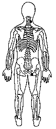

Atitude: medo - Quarta profundidade - Desarmonia do fluxo da Bexiga.
|
Energia da Função da Bexiga.
Nasce da função do Intestino Delgado. Período entre as 16 e 18 horas. O fluxo da Bexiga emerge da quarta profundidade e recebe maior quantidade de energia no inverno.
Leva embora nossas lágrimas e medos.
Envolver o dedo indicador com a outra mão. ou
M.e. na parte posterior do pescoço entre o crânio e o ombro direito TSE 12; ® M.d. sobre a nádega direita TSE 25. ® |
 |
Notas:1 - M.d. = mão direita M.e. = mão esquerda.2 - O texto sublinhado indica que pode ser feito usando alternadamente o lado direito (mão direita) e depois o lado esquerdo (mão esquerda). 3 - Tocar a área indicada, com a ponta dos dedos da mão, durante alguns minutos ou até sentir uma pulsação rítmica. Não precisamos nos preocupar em demasia com a precisão da área indicada, pois cada trava de segurança da energia tem uma abragência de uns sete centímetros em torno de si.